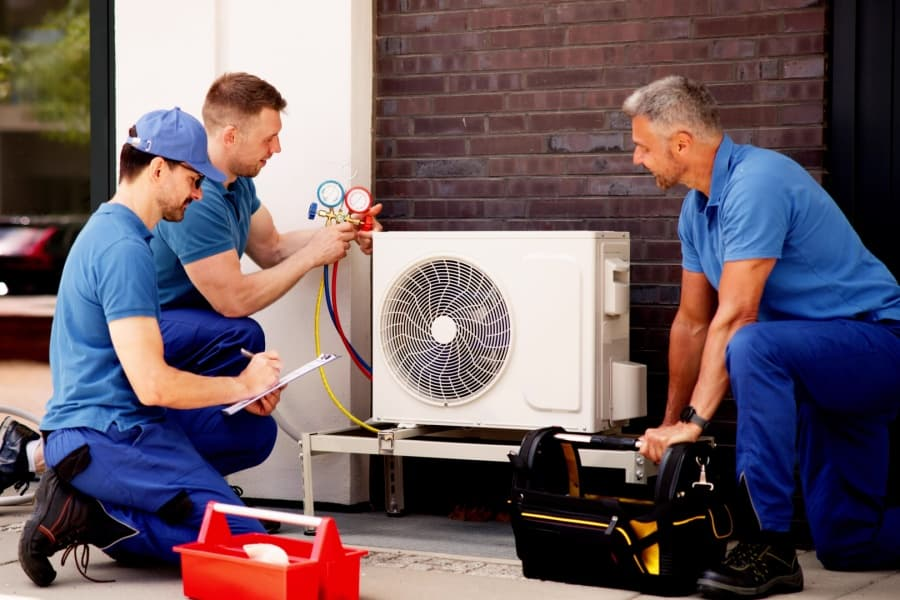

A Tradição do Sr. Moacir • 50 Anos
Especialistas em climatização e refrigeração. A tradição e honestidade do Sr. Moacir garantindo o conforto da sua casa ou empresa.
Soluções completas para climatização residencial e comercial.
Instalação de Splits, Multi-splits e ACJ seguindo rigorosos padrões técnicos para garantir a máxima eficiência e garantia do fabricante.
Elimine fungos e bactérias. Limpeza profunda com produtos específicos que melhoram a qualidade do ar e reduzem o consumo de energia.
Diagnóstico preciso e conserto rápido para equipamentos que não gelam, fazem barulho ou apresentam defeitos. Confiança no diagnóstico.

Fundada pelo Sr. Moacir, a NR Refrigeração não é apenas mais uma empresa no mercado; somos parte da história de Nilópolis. Com mais de 50 anos de estrada, vimos a tecnologia mudar, dos aparelhos de janela aos modernos sistemas Inverter.
O que nunca mudou foi o nosso compromisso com o cliente: honestidade no diagnóstico, preço justo e serviço bem feito, para durar. Quando você chama a NR, está chamando décadas de experiência para dentro da sua casa.